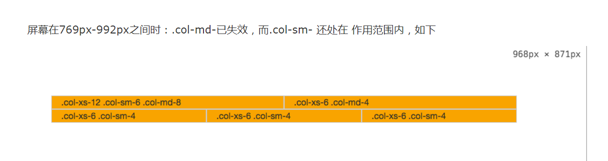

【css-task10】bootstrap中的栅格系统
【小课堂-成都】
分享人：韩建名
目录
1.背景介绍
2.知识剖析
3.常见问题
4.解决方案
5.编码实战
6.扩展思考
7.参考文献
8.更多讨论
今天小课堂分享的内容主要是讲，Bootstrap中的栅格系统(Grid System)
1.背景介绍
Bootstrap，来自 Twitter，是如今最流行的前端框架之一，Bootstrap功能强大，简单易学，很符合实际应用场景。 它是一个CSS/HTML框架。由动态CSS语言Less写成。Bootstrap一经推出后颇受欢迎，一直是GitHub上的热门开源项目。bootstrap为我们提供了一套完整的流体栅格系统，而且随着屏幕或者视扣尺寸的增加，系统会自动分成最多12列，通过类名使用非常便捷。
2.知识剖析
2.1 bootstrap中栅格系统的原理是采取12列的栅格体系，根据主流设备的尺寸进行分段，每段宽度固定并且浮动，通过百分比和媒体查询实现响应式布局。
2.2使用栅格系统
第一步：创建栅格系统的容器
...
解释：为了寄予栅格系统合适的排列和padding，要把每一行“row”包含在一个容器中，而这个容器我们用class名为“container”或者“container-fluid”,这两个class是Bootstrap为我们事先设计好的
.container是固定宽度，居中显示。
下面是Bootstrap中.container类的代码
.container{
padding-right:15px;
padding-left:15px;
margin-right:auto;
margin-left:auto;
}
@media (min-width: 768px){
.container{
width: 750px;
}
}
@media (min-width: 992px){
.container{
width: 970px;
}
}
@media (min-width: 1200px){
.container{
width: 1170px;
}
}
.container-fluid是 100% 宽度：下面是Bootstrap中.container-fluid类的代码
.conyainer-fluid{
padding-right: 15px;
padding-left: 15px;
margin-right: auto;
margin-left: auto;
}
第二步：创建合适的栅格系统
.col-md-8
.col-md-4
.col-md-4
.col-md-4
.col-md-4
解释：每一个“row”代表一行，而内部的“col-md-数字”代表一个单元格；Bootstrap把每一行分成12等份，“col-md-数字”中的“数字”从1-12中取，数字等于几，就占几份；合理的选择单元格的数字配置，再往单元格中添加我们想要的内容，这样一个栅格系统就完成了！
3.常见问题
3.1单元格的类如何选择和使用
单元格一共有四种：
.col-xs-: 无论屏幕宽度如何，单元格都在一行，宽度按照百分比设置，适用于手机
.col-sm-: 屏幕大于768px时，单元格在一行显示，屏幕小于768px时，独占一行，适用于平板
.col-md-: 屏幕大于992px时，单元格在一行显示，屏幕小于992px时，独占一行，适用于桌面显示器
.col-lg-: 屏幕大于1200px时，单元格在一行显示，屏幕小于1200px时，独占一行，适用于大型桌面显示器
举例说明一下：
.col-xs-12 .col-sm-6 .col-md-8
.col-xs-6 .col-md-4
.col-xs-6 .col-sm-4
.col-xs-6 .col-sm-4
.col-xs-6 .col-sm-4


3.2 栅格系统中的“15px”
相信细心的同学已经发现bootstrap的栅格系统在padding、margin中大量出现了15px这个值，让我们探讨一下这个15px到底是什么东西以及它的作用是什么。
首先是Container的padding-left和padding-right为15px
这个padding是为了使其中的内容不会紧贴于浏览器边缘
其次是row的两侧有-15px的margin
这个负margin把row推出了Container的15px，使其与之重叠
最后是列（col）也有左右两个15px的padding
因为Container和row的15px导致重叠，所以列的左右padding防止col的内容直接接触边界
那么问题来了
去掉Container和row的15px，只是单纯设置col的左右padding不是也可以达到预期的效果吗？
别急，接着往下看
单纯的从常规的row、col中发出这样的质疑的确是情理之中的
但是Bootstrap的栅格系统还有一个嵌套列，当我们使用嵌套类的时候，这三个15px就保证了嵌套列的正常实现
当设置了container,row,column后，如果要在column中嵌套column。首先要把被嵌套的column放到row中，把row放到作为容器的column中，而不需要再放置到一个新的container中，被嵌套的col就充当了container。
而又因为col和container有相同的padding15px，所以在实现上保证了一致性
4.解决方案
5.编码实战
6.扩展思考
Bootstrap 有哪些缺点？
1、Bootstrap 自带的样式权值很高，在开发中需要大量的代码用于覆盖原有样式。
2、不兼容IE8以下浏览器,有兼容需求的就不能使用bootstrap了。
7.参考文献
http://www.cnblogs.com/JerryTao/p/5476027.html
http://www.jb51.net/article/86469.htm
8.更多讨论
bootstrap栅格系统所定义的宽度为什么是小于768px 大于或等于768px 大于或等于992px 大于或等于1200px 这四个分辨率呢？
鸣谢
成都-王帅
感谢大家观看